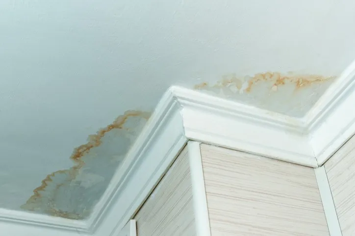
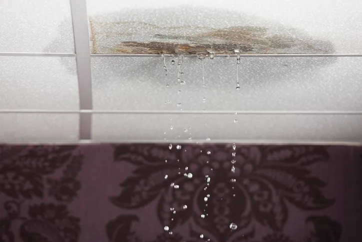
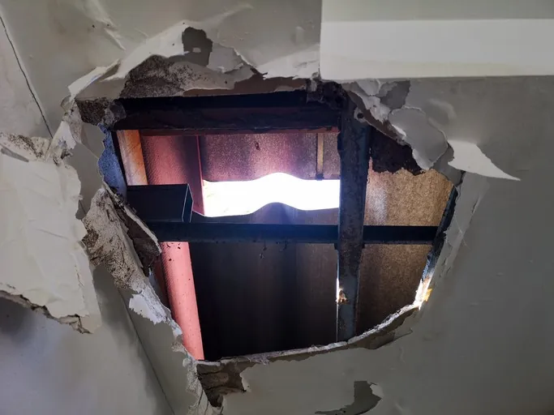
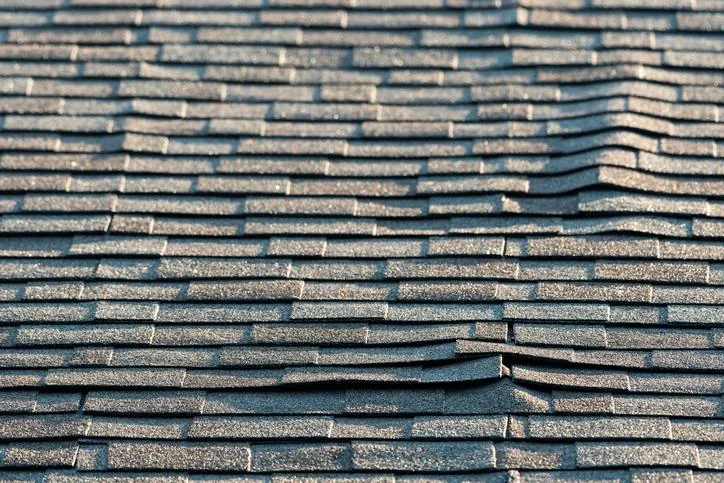
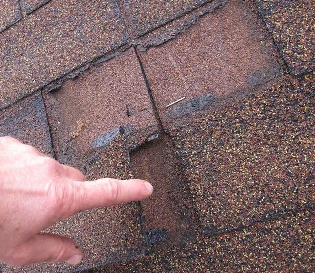

Choosing a professional for fixing a roof leak in Salt Lake City, Utah, ensures a comprehensive inspection that uncovers hidden damages missed by untrained eyes.
American Roofing Company proudly serves Utah, repairing leaks for homes, apartments, condos, and commercial buildings. We help safeguard your home or business from the elements for years. If you’re wondering what to do if your roof is leaking, the most important step is to act quickly. American Roofing can identify the source and prevent long-term issues.
Request Free Quote!
Common Causes for Roof Leak Repair in Utah
Utah residents and businesses experience heavy snow, melting ice in the winter, and the full range of harsh elements for the remainder of the year. Our weather results in the following causes for roof leak repair.
Damaged or Missing Shingles
When shingles crack, curl, or loosen, they can expose the underlayment to moisture, snow, and rain. In some cases, roof patching can resolve minor damage before it spreads.
Clogged Gutters
Clogged gutters mean that rainwater and melting snow often back up under shingles and seep onto the roof deck.
Worn Flashing
Flashing is a thin material that seals roof valleys, chimneys, and vents on your roof. When flashing deteriorates, you can experience a damaging leak quickly. Worn flashing is one common reason homeowners call us for residential roof leak repair in Utah.
Ice Dams
Utah residents and businesses often have ice dams where warm and cold air meet at the edge of their roofs, causing poor draining that leads to leaks.
Improper Installation
Unprofessional installations are a common cause for unexpected leaks. Patching a roof leak is best left to professionals.
Signs of a Leaky Roof
If you notice a new puddle on your floor after a recent rain or see a new drip from the ceiling, and think “I need to fix my roof before this gets worse,” contact a licensed roofing professional. But what are some less overt signs you have a leaky roof that needs repair? Signs include:
- Water stains on your ceiling or walls
- Sagging or buckling drywall
- Warping ceiling tiles
- Mold or mildew growth
- Exposed insulation
- Missing shingles
- Cracked flashing
- Unusual dripping or trickling sounds after a rain
- Musty odors
- Soft or rotting wood
- Pooling water around your home or business’s foundation
- Damaged soffits
- Gaps around the vent flashing




